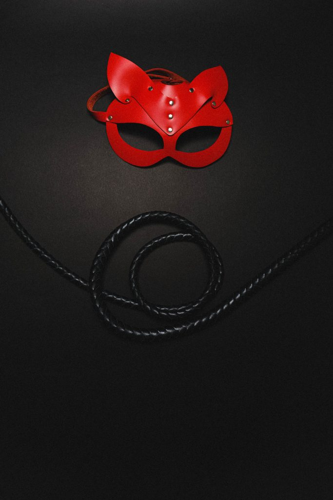

È un premio annuale e semi-serio, esiste dal 1993 e io l’ho scoperto solo di recente. La “miglior peggiore” scena di sesso dell’anno – in un libro altrimenti bello e non di genere pornografico – viene premiata ogni 30 novembre dalla Literary Review, magazine letterario che esiste dal lontano 1979.
Tra i suoi finalisti figura anche, nel 2016, il nostro Erri De Luca con “Il giorno prima della felicità”; e se mi sono sorpresa di non trovare neanche tra i vincitori le cinquanta sfumature, leggendo alcune scene vincitrici ho dovuto riconoscere che E.L. James, pur nella sua iper-semplificazione e con tutti i difetti del caso, poteva fare di molto peggio.
Nelle intenzioni dei promotori, il premio vorrebbe essere da incentivo agli scrittori a fare del proprio meglio per scrivere scene di sesso verosimili, degne di questo nome o almeno non ridicole. Il ridicolo, quando si parla di sesso, è sempre dietro l’angolo, come dimostrano alcuni dei passi vincitori qui di seguito. In alcuni casi li ho dovuti tradurre perché non sono arrivati in italiano e ho provato a fare del mio meglio per conservare il piglio originale – sono in ogni caso lontane dal perfetto, ma credo diano un’idea.
Nel pieno rispetto degli autori, che comunque avranno messo anima e corpo nello scrivere i romanzi indicati, da lettrice non ho potuto non divertirmi a leggere queste scene. Come persona che scrive, invece, ho trovato questi passi molto utili per capire cosa NON fare quando si scrive di sesso.
1 L’assassinio del commendatore, Haruki Murakami – ovvero: erotismo al burro
“Le ho fatto scivolare dentro il mio pene eretto. O meglio, da un altro angolo, quella parte di lei ha ingoiato il mio pene, immergendolo in ciò che sembrava burro caldo”.
2 Il magistero dei giardini e degli stagni, Didier Decoin – o anche: quando il sesso è dolorosamente vivido
Katsuro gemette mentre una sporgenza si andava formando sotto il materiale del suo kimono, una sporgenza che Miyuki afferrò, impastò, massaggiò, premette e schiacciò. Con le carezze, il pene e i testicoli di Katsuro divennero un ammasso unico che rotolava sotto la presa della sua mano. Miyuki si sentiva come se stesse manipolando una scimmietta che raggomitolasse le zampette.
3 Il gioco della distruzione, Christopher Bollen – ovvero: quando l’amante è un po’ indeciso
Si copre i seni con il costume da bagno. Il resto di lei rimane così deliziosamente esposto. La pelle delle sue braccia e delle sue spalle ha una sfumatura diversa di abbronzatura, come macchie d’acqua in una vasca da bagno. Il suo viso e la sua vagina competono per la mia attenzione, così do uno sguardo in giù, al biliardo triangolare del mio pene e i miei testicoli.

4 Winkler, Giles Coren – o anche: quando il sesso è al cardiopalma
E lui venne alla grande nella sua bocca e il suo cazzo saltava intorno e sbatacchiava sui denti di lei e lui vide tutto nero e lei tirò fuori il suo cazzo dalla sua bocca e si sollevò e frustò via il cuscino, lui ansimò e annaspò e venne di nuovo così forte che il suo cazzo strattonò via dalla mano di lei e uno schizzo di sperma lo colpì dritto nell’occhio, lo punse come mai nulla prima nella sua vita; urlò di dolore, ma l’urlo avrebbe potuto essere qualsiasi cosa, e mentre lei gli afferrava il cazzo, che stava saltando intorno come un soffione della doccia lasciato cadere in una vasca da bagno vuota, lei gli grattò la schiena in profondità con le unghie di entrambe le mani e lui venne tre altre volte, in strisce dense sul petto di lei. Come fosse Zorro.
5 Bunker 13, Aniruddha Bahal – erotismo di design
Lei si sta togliendo la camicetta. Adesso è in terra. I suoi seni sono manifesti per i dotati endomorfi. Nonostante tu non voglia, non puoi non lasciarti scappare un tenero sospiro. Lei, adesso, si sta togliendo i pantaloni. Formano un mucchio sul pavimento. Le sue mutandine sono bianche e traslucide. Le si vedono i peli scuri che premono contro la stoffa. Formano un disegno, e a te viene da sussultare. “E quella che è?”, chiedi. Davanti a te c’è una passera di design, depilata e pettinata in forma di svastica. Il denominatore ariano. Mentre scorri le mani sulla sua schiena, sui suoi seni, e tracci con le dita la svastica sul suo monticello, ti cominci a sentire come un antico signore della guerra ariano.
6 Lo zar del crimine, Nichola McAuliffe – cioè: sottigliezze verbali
“È tutto a posto, non mi romperò” mormorò lei. Lo percepì consapevole della sua taglia e del suo peso, percepì la sua attenzione a non farle male. Lei si mosse per aiutarlo a sistemarsi e sentì i colpi alla cieca di lui prima che scivolasse dentro di lei. Era più grande di quanto ricordasse. Inclinò i fianchi e sentì il peso delle palle di lui sul suo… sul suo cosa? Sul piccolo tratto di pelle tra vagina e ano. Perineo – si chiamava così? La sua mente urlò: Stai zitta, Lucy! Non è il momento delle parole crociate su Cosmopolitan.
Spero che vi siate divertiti a leggere questi passi almeno quanto mi sono divertita io, fatemi sapere nei commenti se in qualche romanzo avete trovato qualcosa di ben peggiore e… alla prossima!